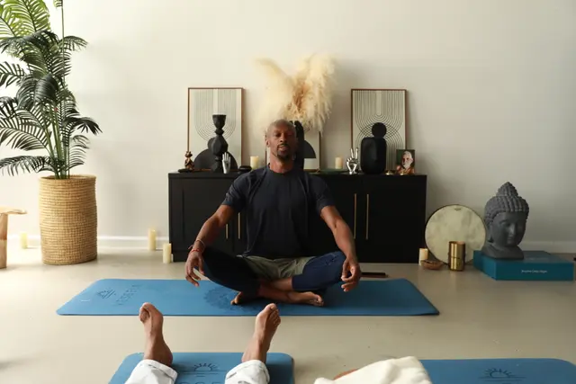

Vessels aims to become a holistic wellness leader, merging and products with educational insights. While our immediate offerings center around the Archive 00: Genesis's NOW Program, it just the beginning, with plans to expand into a various health and holistic verticals.We envision hosting our own retreats for on-site experiences and more
We understand that 'doing the work' leads to major life shifts
for the better, and we want to be part of our community's
journey from healing to thriving. With your support, we'll
achieve our vision together.
Vessels aims to become a holistic wellness leader, merging and products with educational insights. While our immediate offerings center around the Archive 00: Genesis's NOW Program, it just the beginning, with plans to expand into a various health and holistic verticals.We envision hosting our own retreats for on-site experiences and more
Our philosophy is ‘Vessels’ are curated collections that elevate. They are thoughtfully bundled products, courses, experiences, and tools designed to nurture your mental well-being. We keep our offerings fresh through a rotating product line. Our courses provide valuable knowledge, while the products transform you into a practitioner.
We're a warm and inclusive community dedicated to exploring the fundamental truth that we are spiritual beings navigating human experiences. Through mindfulness practices, we honor each other, making connections and holding conversations in safe, respectful spaces. We embrace diversity and welcome everyone on the path to the universal truth, ‘everyone is you, having a different experience’
UNITY: We practice and cultivate a sense of
interconnectedness, celebrating diversity and inclusion as we come
together on our shared journey of self-discovery and growth.
INNOVATION: We are pioneers, continuously exploring new
frontiers and pioneering groundbreaking approaches to holistic
wellness and personal development, always seeking to inspire and
evolve the community.
EMPOWERMENT: We equip individuals
to take charge of their well-being, providing tools, knowledge, and
guidance to foster resilience and self-empowerment.
HARMONYWe seek balance and harmony in every facet of life,
nurturing a holistic approach that integrates mind, body, and spirit
to promote overall well-being and fulfillment
Vessels embodies what I needed during my battle with anxiety and deep depression years ago—a brand that understands your process to wholeness. Through self-inquiry, I've realized the profound power of inner healing and realized, in the universal truth of oneness. I'm deeply passionate about sharing the NOW Method with the world. Now, as a Meditation teacher, Breathwork Facilitator and Integration Coach, I aim to hold space for others as they discover this truth within themselves. Acknowledging the self, plant medicine, meditation, fasting and breathwork have been pivotal in my personal journey, and I believe in their potential for global healing
Bring the hum home and practice with our global community of teachers